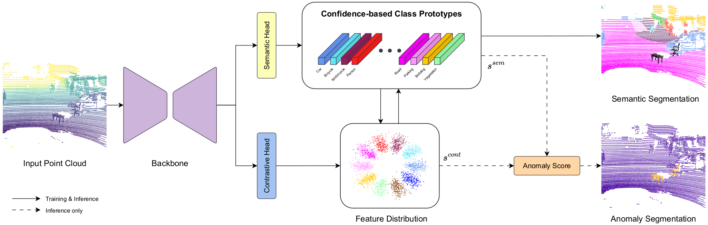

Understanding the surrounding environment is fundamental in autonomous driving and robotic perception. Distinguishing between known classes and previously unseen objects is crucial in real-world environments, as done in Anomaly Segmentation. However, research in the 3D field remains limited, with most existing approaches applying post-processing techniques from 2D vision. To cover this lack, we propose a new efficient approach that directly operates in the feature space, modeling the feature distribution of inlier classes to constrain anomalous samples. Moreover, the only publicly available 3D LiDAR anomaly segmentation dataset contains simple scenarios, with few anomaly instances, and exhibits a severe domain gap due to its sensor resolution. To bridge this gap, we introduce a set of mixed real-synthetic datasets for 3D LiDAR anomaly segmentation, built upon established semantic segmentation benchmarks, with multiple out-of-distribution objects and diverse, complex environments. Extensive experiments demonstrate that our approach achieves state-of-the-art and competitive results on the existing real-world dataset and the newly introduced mixed datasets, respectively, validating the effectiveness of our method and the utility of the proposed datasets.
LIDO is a novel approach for 3D LiDAR Anomaly Segmentation that directly works on the feature space to model the feature distribution of inlier known classes and identify anomalous objects. It is composed of a backbone to extract per-point features and two branches: the Semantic Head produces semantic segmentation predictions and builds per-class prototypes, while the Contrastive Head directly models feature distribution to identify anomaly instances.

The semantic head is responsible for generating the semantic predictions and, at the same time, constructing a robust prototype for each inlier class. It is optimized with a combination of the cross entropy loss, the Lovasz loss and a proposed confidence-based prototype loss that gathers all points belonging to a certain class closer in the feature space.
The aim of the contrastive head is to directly identify points belonging to anomalies by learning discriminative and distinguished per-class prototypes, and modeling their distribution in the feature space. To achieve this, we adopt both the contrastive loss and the objectosphere loss.
In order to obtain both semantic segmentation and anomaly predicitons, we combine the outputs of the two heads. The semantic head provides standard semantic segmentation predictions through cosine similarity among prototypes. Both heads produces scores to identify anomaly points, based on cosine similarity, entropy and objectoshpere threshold, which are then combined together to produce the final scores.
We introduce a new set of mixed real-synthetic Out-of-Distribution (OoD) datasets for 3D LiDAR anomaly segmentation. These datasets are constructed from three autonomous driving benchmarks with different LiDAR sensor resolutions, complementary to the only available real-world dataset, STU. We use ModelNet as a source for synthetic anomaly objects, filtering its models to avoid overlap with categories and objects present in real-world LiDAR datasets. To ensure realism, we also introduce a protocol for inserting synthetic objects into real LiDAR scans, manipulating point distributions, intensity values, and aligning them to the LiDAR sensor geometry in a beam-like format. Each dataset contains two different versions, a single and a multi split, comprising respectively a single anomaly object or multiple ones in each single scan.
Table: Comparison of publicly available LiDAR datasets for Anomaly Segmentation. BB = bounding box, SM = semantic masks, BM = binary masks.
| Dataset | #Beams | Size | Labels | #OoD Instances |
|---|---|---|---|---|
| CODA-KITTI | 64 | 309 | BB | 399 |
| CODA-nuScenes | 32 | 134 | BB | 1125 |
| CODA-ONCE | 40 | 1057 | BB | 4413 |
| SOD | 16 | 460/530 | SM | - |
| STU | 128 | 8022/1960 | BM | 1965/- |
| nuScenes-OoD (Ours) | 32 | 6019 | SM | 2398/7268 |
| SemanticPOSS-OoD (Ours) | 40 | 500 | SM | 196/586 |
| SemanticKITTI-OoD (Ours) | 64 | 4071 | SM | 1634/4894 |
Available soon.